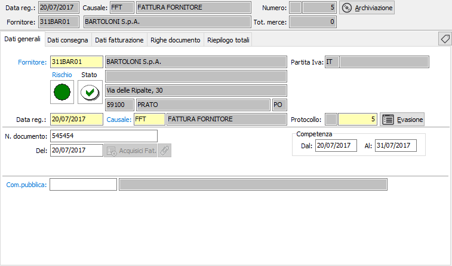
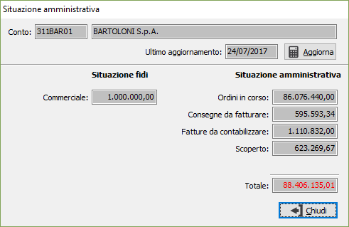
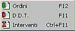
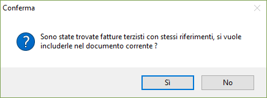

Dati generali
All’inizio di una nuova fattura il cursore è posizionato sul campo fornitore della linguetta dati generali, da cui inizia l’inserimento.

FORNITORE: codice alfanumerico di 8 caratteri, presente in anagrafica fornitori, che individua il fornitore da trattare. Sul campo, la cui compilazione è obbligatoria, sono attive le funzioni di ricerca (F9) ed accesso rapido alla tabella (CTRL+W) per eventuali nuovi inserimenti o variazioni. Il codice inserito in questo campo è quello del fornitore da cui proviene la fattura. Dopo aver selezionato il codice del fornitore vengono visualizzati, senza possibilità di modifica, i dati anagrafici. La procedura non consente l’inserimento della fattura nel caso in cui il campo Codice stato dell’anagrafica fornitore contenga il valore Bloccato. Nel caso il fornitore abbia associato delle lettere di intento, dopo l'inserimento della data del documento, sarà richiesto quale lettera utilizzare sul documento.
Vengono visualizzati, tramite appositi indicatori visivi, lo stato di rischio, derivante dal Company Shield e lo stato di affidabilità derivante dalla situazione amministrativa; cliccando sull'etichetta Rischio viene mostrata la legenda che spiega i significati dei colori mostrati, cliccando invece sull'indicatore colorato, se il servizio Credit Shield è attivo e ci sono informazioni, si accede direttamente all'analisi della partita Iva con quella riportata sul documento, posizionati sulle informazioni semaforiche. Se lo stato di rischio non viene visualizzato significa che il servizio è attivo, ma l'utente con cui si è collegati non è configurato come utente Company Shield oppure non ha l'abilitazione alla visualizzazione dei semafori.
Sia l'indicatore di rischio che l'indicatore di stato non causano alcun blocco all’inserimento del documento, ma si limitano a mettere sull’avviso l’utente.
Gli indicatori di stato possono essere così riassunti:
punto interrogativo: indica che non è presente nessun valore da controllare;
segno di spunta verde: indica che è presente un fido sufficiente a coprire gli eventuali scoperti;
punto esclamativo su fondo giallo: indica di fare attenzione perchè non è presente nessun fido ed è presente uno scoperto;
X su sfondo rosso: indica che è presente un fido che non è sufficiente a coprire lo scoperto.
Cliccando sull'immagine, se gestiti i saldi clienti/fornitori in configurazione, si attiva la finestra video di Situazione amministrativa che consente di visualizzare il fido concesso e la situazione amministrativa dettagliata; nel caso esista uno scoperto di fido il totale viene evidenziato in rosso. L’eventuale saldo negativo fra i vari valori non comporta tuttavia alcun blocco, ma consente all’utente di decidere in merito all’opportunità di inserire il documento.

DATA REGISTRAZIONE: campo data in cui viene visualizzata la data di sistema, modificabile dall’utente.
CAUSALE: codice alfanumerico di 3 caratteri presente nella tabella Causali Fatture che definisce la tipologia di fattura in esame. Se, presente, viene visualizzata la causale esistente nelle preferenze dell’anagrafica del fornitore in esame, modificabile dall’utente. Sul campo sono attive le funzioni di ricerca (F9) ed accesso rapido (CTRL+W) sulla tabella stessa.
PROTOCOLLO: campo numerico che contiene il numero progressivo interno della fattura. Viene completato automaticamente dal programma in base alla serie contenuta dalla causale. E’ modificabile dall’utente.

Premendo l'apposito pulsante Evasione, compare un menù che consente l'evasione dei documenti; se la voce non è attiva significa che non ci sono documenti da evadere di quel tipo. Accanto alla voce sono visualizzati anche i tasti funzione per la relativa evasione. Premendo il tasto F12 è possibile effettuare la selezione degli ordini, da inserire nella fattura, premendo il tasto F11 è possibile effettuare la selezione dei D.D.T., da inserire nella fattura, premendo il tasto CTRL+F11 è possibile effettuare la selezione degli interventi, da inserire nella fattura.NUMERO DOCUMENTO: campo numerico che contiene il numero della fattura del fornitore.
DEL: campo data che contiene la data della fattura del fornitore.
DATE COMPETENZA: Indicare l'eventuale periodo di competenza della fattura (se gestito in configurazione acquisti).
CODICE PROGETTO: Codice alfanumerico di 15 caratteri che definisce il progetto di riferimento. Sul campo sono attive le funzioni di ricerca (F9) ed accesso diretto alla tabella (CTRL+W). Il campo è presente solo se attiva la gestione progetti.
COMMESSA PUBBLICA: Codice della commessa pubblica, sul campo sono attive le funzioni di ricerca (F9) ed accesso diretto alla tabella (CTRL+W). Il campo è presente solo se attiva la gestione della normativa antimafia e se gestita per il tipo documento.
Se presente il modulo BoxFatture passivo,
utilizzato tramite l'applicazione OS1BoxFatture, sarà presente il pulsante
 ed in fase di inserimento sarà possibile l'acquisizione
delle fatture di acquisto.
ed in fase di inserimento sarà possibile l'acquisizione
delle fatture di acquisto.

Se presente il modulo del conto lavoro, dopo aver inserito il numero e la data del documento viene effettuata la ricerca di fatture terzisti intestate al fornitore e con stesso numero e data documento e se presente un documento compare la finestra di richiesta; rispondendo affermativamente le righe della fattura terzista vengono collegate ed incluse nel documento attuale.Una volta che le fatture sono collegate, in variazione della fattura di acquisto compare il pulsante a lato, da utilizzare se si desidera eliminare il collegamento e le relative righe dalla fattura di acquisto.